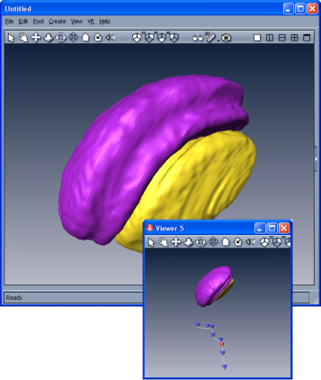

The camera path is shown in an extra viewer. You can click on
a keyframe and modify the camera. The changes will be displayed in the
original viewer simultaneously. The reddish icon represents the current
camera. In general this is not a keyframe but an interpolated camera.